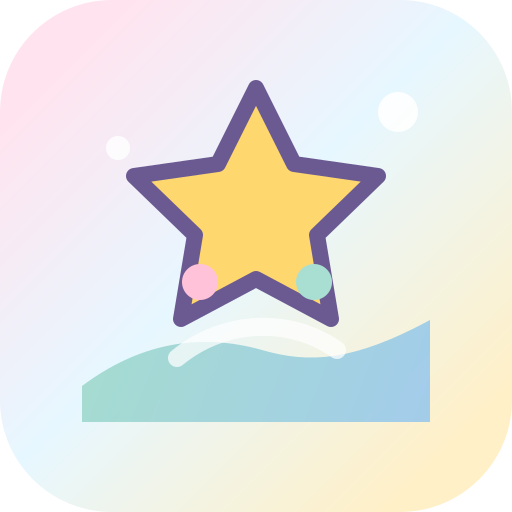

404 · 页面没有找到这条学习航线暂时不存在
可能是链接写错、页面改名，或者旧材料已经被收进新的资源库。别在空白页里绕圈，先回到课程岛、精品资源库或真题训练台继续学习。
第一次来用新手向导选课程和状态，生成三步路线。
找不到资料去资源库按课程、题型、阶段和优先级筛。
想直接做题进真题训练台，先整卷校准，再专项补洞。

404 · 页面没有找到可能是链接写错、页面改名，或者旧材料已经被收进新的资源库。别在空白页里绕圈，先回到课程岛、精品资源库或真题训练台继续学习。